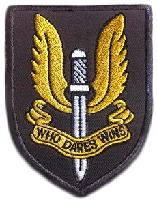
SAS
Special Air Service

Founded in 1941, the Special Air Service (S.A.S) was a unit of the British Army during WW2. The S.A.S. moved from obscurity in 1980 when they successfully rescued hostages from the Iranian Embassy siege. Their focus is on counter terrorism, hostage rescues and covert operations.

Seamus "Sledge" Cowden
Seamus Cowden hails from the upper tip of the Scottish Highlands. Due to his imposing physical stature and athleticism, he found early success as the Captain of the 1998 Scotland National under-20 Rugby Union Team. A strong desire for public service inspired Cowden to enlist in the army at 18, after five years of active duty, he was recruited by the SAS. Cowden displays natural leadership qualities, likely developed during his amateur sports career. His comfort on the front line can be attributed to his confidence and tactical experience.
Mike "Thatcher" Baker
Born into a family of stevedores, Baker enlisted for active military duty on his eighteenth birthday. A veteran of three wars, Baker was the oldest SAS operative on active duty until he was recruited by Rainbow. Baker is highly observant, calculating and decisive. While his demeanor may denote traces of impatient cynicism, Baker possesses a profound sense of ethical responsibility. It is recommended to assign Baker with junior operators of strong moral conviction, whom he can mentor.
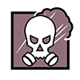
James "Smoke" Porter
Porter was not an academic, although in secondary school, he excelled in science. He took a particular interest in biology and the unit on dissection. During his gap year, Porter enlisted in the British Army, using a fake ID to circumvent parental consent. Porter is a thrill seeker with very little regard for his personal safety. He is fearless in battle and can be a great asset for defensive maneuvers. However, he seems to enjoy the havoc and chaos of war. He tends to have an odd sense of humor in stressful situations. Can be narcissistic.

Mark R. "Mute" Chandar
Chandar graduated from secondary school at the age of twelve. A science prodigy, he was accepted into the University of Cambridge, Department of Engineering at fourteen after completing an internship at a British tech company during his gap year, working on prototypes for a new security system. Chandar is highly intelligent and analytical. He is used to being the youngest and smartest one in the room. A man of few words, he prefers brevity and clarity to extemporizing. His curt nature is easily misconstrued as rudeness.
FBI SWAT
FBI Special Weapons and Tactics Teams
Created in 1983, The FBI Enhanced Special Weapons and Tactics (SWAT) Teams are trained to intervene in high-risk situations. Their expertise varies from hostage rescues, aircraft hijackings, tracking fugitives, stronghold and tubular assaults, to specialized sniper operations.


Eliza "Ash" Cohen
Born and raised in Jerusalem, Israel, Cohen enrolled at Tel Aviv University after secondary school in the Engineering program. It was during this time she did a semester abroad at Boston University. After college, she enlisted in the Israeli Defense Forces. Her engineering background made her a great candidate for mechanical maintenance and demolitions. She was later transferred to FBI SWAT due to an international law enforcement exchange program. Cohen brought her knowledge of demolitions with her in producing a weapon-mounted breach charge capable of blowing open a door or wall from a distance. Her military training as a demolitions specialist has left Cohen with an inflated sense of self. She can be aggressive, impulsive, and overly confident. She is quick to action, which can be an asset or fatal for someone in her line of work.


Jordan "Thermite" Trace
Trace joined the Marines after high school, serving two tours in Iraq. After his discharge, he used his GI Bill money to put himself through college at Texas A&M and earned a Bachelor Degree of Science in Chemistry. He then joined the FBI. After four years as a field agent, he transferred to FBI SWAT. Regimented, disciplined, orderly, these are the words people use to describe Trace. He knows when to relax, especially in social situations. He takes pride in knowing all of the variables. Trace prefers to be the one in control rather than leave things to chance.


Miles "Castle" Campbell
Campbell graduated from Cal State LA with a bachelor's degree in Science and Criminal Justice and promptly joined the LAPD. After five years on the job, he was assigned to the LAPD SWAT team where he excelled at for three years before being transferred to the FBI. Campbell spent two years as an FBI field agent when his career had taken a natural progression as he was reassigned to the FBI SWAT team. Campbell has a knack for putting people at ease. He always appears comfortable regardless of the context. Campbell constantly strives to make sure that those around him are taken care of and feel safe, and is highly protective of people close to him.


Jack "Pulse" Estrada
Born to Cynthia Estrada and Mark Peterson on Seymour Johnson Air Force Base, Jack was raised as a military brat. Following his mother's footsteps, Pulse became an intelligence officer. As a result of the constant relocation from base to base, Jack was fascinated by the microscopic variances that comprise identity. He became adept at recognizing micro-expressions and delineating a person's history based on their speech patterns and physicality.
GIGN
Groupe d'intervention de la Gendarmerie nationale

The National Gendarmerie Intervention Group (GIGN) created in 1973, specializes in counter-terrorist and rescue operations. They've taken part in over 1000 operations and have been selected by the ICAO to teach other member states Spec Ops hostage-rescue exercises abroad planes.
Emmanuelle "Twitch" Pichon
Born in the historic town of Nancy, Pichon grew up in a family that valued education, particularly math and science. Early participation in sponsored computer programming competitions led to her joining the army cadets at sixteen. Pichon demonstrates an affinity for complex robotic systems and mechanical academia, due to an early exposure to analytical problem-solving. This ability transcends academia. Unlike many engineers who have the propensity to be emotionally disconnected or apathetic, Pichon is strongly intuitive and empathetic. She believes that technology's best use is to improve the quality of life. This principle motivates Pichon in her military service.
Gilles "Montagne" Touré
The son of an army officer and school teacher, the family was stationed near Bordeaux, France. A few years after he graduated from high school, he became a member of the National Gendarmerie. As a police officer, Touré has dedicated his life to the defence work. His devotion and commitment to the ideals of National Gendarmerie allowed him to obtain a position within the GIGN. Touré is considered highly dependable by his peers. His steady nerves have allowed him to take control of complex, high-stress situations during the tenure of his career. As a trainer, Touré is stern with the new recruits but always tries to remain fair. He prefers to lead by example.

Gustave "Doc" Kateb
Kateb grew up in an affluent family, in Paris' 16th arrondissement. At twenty, he abandoned a potentially prominent private medical practice in favor of a career with the French Defense Health Service. Kateb demonstrates a high degree of empathy for human suffering; he is a rare genuine altruist. He sees military service (especially the role of CTUs like GIGN) as noble in their dedication to protecting civilians. He considers the front line his natural habitat, as it provides him with the opportunity to have direct influence and impact of the welfare of the unit. His proclivity for conflict resolution makes him a valuable asset.

Julien "Rook" Nizan
In school, Nizan excelled at athletics, specifically in Track and Field. The youngest son of a working-class family, he enlisted in the Gendarmerie Nationale at eighteen and found himself assigned to the Highway Patrol unit. During basic training, Nizan discovered his aptitude for firearms, a skill that he would continue to develop and master over them during his time with the Gendarmerie Nationale. His skill with a rifle eventually attracted the attention of the GIGN. Nizan is idealistic and trusting. He can be impulsive and must self-regulate in order to remain on task. When his focus is clear, he is decisive and driven to complete the task at hand.
SPETSNAZ
Spetsial'noïe Naznatchéniyé

Created in 1974, Spetsnaz are members of Russian units dedicated to counter-terrorism, paramilitary and covert operations. They're tasked with protecting Russia's strategic installations, both domestic and international, though little is known is about the exact nature of their mission.

Timur "Glaz" Glazkov
Glazkov was born and raised in Vladivostok, Russia where his father worked in the shipping industry. Glazkov studied art in secondary school, until the Beslan school hostage crisis inspired him to transfer to the Cadet Corps and pursue a career in the armed forces. While Timur doesn't thrive in large groups, he is engaging and expressive in one-on-one conversations. He has a patient temperament and can be very introspective. His background as an artist, his curiosity, and attention to detail has trained him to be mindful and precise. This trait makes Timur an excellent spotter and sniper.

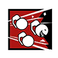
Shuhrat "Fuze" Kessikbayev
Kessikbayev grew up in a military family in Samarkand, Uzbekistan. After his family emigrated to Russia shortly before the collapse of the Soviet Union, Kessikbayev followed in his father's footsteps and enrolled in the military, where his facility with technology landed him a spot in the coveted weapon testing brigade at Alabino firing range near Moscow. Kessikbayev is an expert tinkerer and a master craftsman, more at ease with the workings of machines than those of people. His gruff demeanor and curt speech should not be mistaken for misanthropy. He possesses a strong moral conviction.
Maxim "Kapkan" Basuda
Born and raised in Kovrov, Basuda is the eldest of three sons of parents who were factory workers. Hoping to escape a grueling life in the factory, he enlisted with the Ministry of Internal Affairs and was sent to Naryan-Mar, a small sea and river port town on the Barents Sea. Basuda became an avid hunter and trapper during his time in the Arctic Circle, before being transferred to Beslan in 2002. Basuda is a self-sufficient realist. He has seen the harsh reality of the world and does not allow that to hinder his ability to act. He's fascinated by psychology; what allows one creature to become a hunter and the other prey.

Alexsandr "Tachanka" Senaviev
Born into a Red Army family, Senaviev enlisted when he turned eighteen. After the Soviet Union pulled out of Afghanistan, Senaviev was transferred into the Spetsnaz shortly before the collapse of the Union. Calm in crises. Alex harbors a joyous, if acerbic outlook. He has a limited social filter, which has gotten him into trouble in the past.
GSG 9
Grenzschutzgruppe 9

After the 1972 Munich Massacre, GSG 9 was formed to combat the growing threat of terrorism. Due to a problematic military history, GSG 9 grew from the German Federal Border Guard Service/Police. GSG 9 specializes in mitigating crisis situations, such as hostage-taking, kidnapping, terrorism, and extortion.


Elias "Blitz" Kötz
A student of Hermann-Böse-Gymnasium, Kötz excelled academically and as a sportsman in the HBG's bilingual program. His imposing physique made him an exceptional athlete, he carried his experience on the field into his military training. His jovial nature and academic background eased the transition from a Schnelle Kräfte soldier in Kosovo to a member of GSG 9. Kötz was integral to establishing an anti-terrorism unit in India following the 2008 attack in Mumbai. Kötz has seen his share of battlefield horrors but is mentally resilient. He uses humor to disarm and as a device to manage stress during operations. He is the first to rush a barricade and is always willing to place the team's safety over his own. Kötz rejects the concept that his deeds are in some way heroic. When faced with overt praise, he will become self-effacing.


Monika "IQ" Weiss
Weiss developed a knack for electrical engineering early in life. At sixteen, she completed her first internship with a local tech company. She would continue her education at MIT and Caltech in the United States. After university, she traveled for a year before dedicating her life to a new challenge, the Bundespolizei (BPOL). Weiss thrived in her new environment and after two years with the BPOL, she was recruited by GSG-9. A brilliant overachiever and a fast learner, Monika Weiss is a natural at almost everything she tries. With an Ivy League education in electrical engineering and service in GSG-9's technical testing and airborne units, she uses a device which detects electronic traps and gadgets at a distance. A brilliant overachiever and fast learner, Weiss has been successful at nearly everything she tries. This facility, however, has conditioned her to refuse failure as an acceptable outcome. This can be manifest as borderline obsessive behavior when tackling obstacles that are perceived to be difficult or exceptionally challenging.


Marius "Jäger" Streicher
Raised by his uncle who was a mechanic for what later became the Bundespolizei (BPOL) Aviation Group after reunification, Streicher joined BPOL as a helicopter technician. He began designing defensive weapon systems, including a ground-based Active Defense System (ADS) prototype that caught the attention of the GSG 9. A veteran of the GSG 9 anti-piracy ops in the Indian Ocean, he was later recruited to Team Rainbow. Streicher is highly creative and curious, with a strong desire to serve. He has a tendency to lack humility. Though he has a remarkable affinity for complex machinery, he is not adept at reading social cues. Coupled with his boisterous tendencies he can be a bit abrasive.


Dominic "Bandit" Brunsmeier
Brunsmeier and his twin brother Cedrick joined the Bundesgrenzschutz (BGS) the day after their eighteenth birthday. Stationed with border patrol he would spend his first year getting accustomed to following orders and filing paperwork. A prankster, Brunsmeier honors and humiliates his brother's memory each time he deploys the Crude Electrical Device (CED), the weapon responsible for Cedrick's early retirement from the BGS. Resourceful and adaptive, Brunsmeier relies on his cunning for survival.
JFT2
Joint Task Force 2

Due to public concern over the RCMP SERT police officers being taught to use primarily lethal means, the Joint Task Force 2 (JTF2) was activated in 1992. The Government of Canada does not comment on JTF2 and much of the information regarding the unit is classified.

Sébastien "Buck" Côté
A Montreal native, Côté always wanted to lead an unconventional life. He enrolled in the Canadian Armed Force via the Regular Officer Training Plan, which allowed him to attend University and obtain a degree in criminology. After graduation, he became an MP in the Canadian Army. When his time in the Army was completed he joined the Royal Canadian Mounted Police and eventually became a part of the Emergency Response Team. After excelling in his ERT role he was invited by the Canadian military to re-up and become a member of JTF2. Highly pragmatic, Côté will always take the shortest distance between two points. He is not one to mince words or become hyperbolic. He enjoys simple mechanical devices rather than the more high-tech arsenal employed by other members of Team Rainbow.
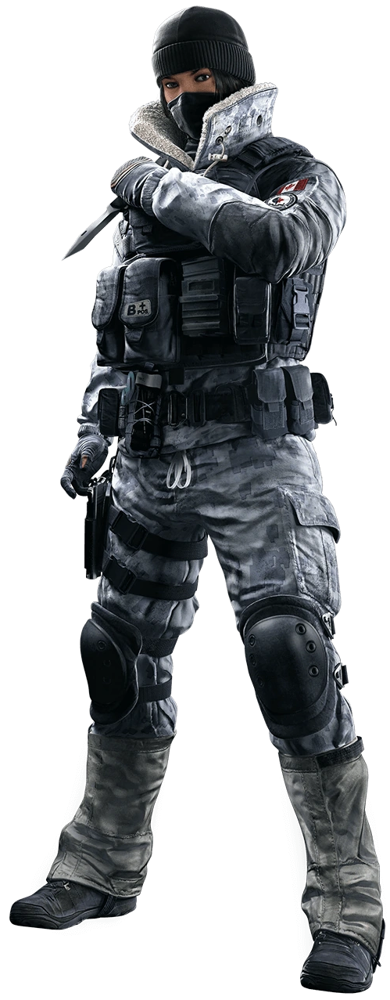
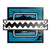
Tina "Frost" Lin Tsang
Tsang grew up in Vancouver, British Columbia. When she turned eighteen, Tsang enlisted with the Royal Canadian Air Force (RCAF) and was sent to the Royal Military College of Canada (RMC) as an Officer Cadet. After completing a bachelor's degree in Science and Mechanical Engineering, she completed her officer training and was stationed at CFB Comox with the Joint Coordination Centre Victoria (JRCC Victoria). She was later invited to join Joint Task Force 2. Tsang is an extremely focused individual who meticulously plans out every move she makes. When she sets her eyes on a goal, there is little that can stop her. Tsang is patient and never takes shortcuts.
NAVY SEALS
Sea, Air and Land
Commissioned in 1942, the Amphibious Scouts and Raiders saw combat in November 1942 during Operation Torch. Comprised of small highly trained teams, this group would evolve into the NAVY SEAL, who get their name from the environments in which they operate: sea, air and land.
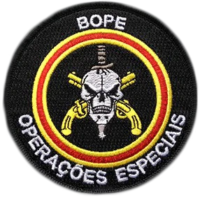
BOPE
Batalhão de Operações Policiais Especiais

Rio de Janeiro State's Military Police BOPE units have extensive experience in guerilla and urban warfare. Working in the Favelas makes them experts in close quarter combat. BOPE's primary focus is supporting local law enforcement in the suppression of crime and drug trafficking.


Vicente "Capitão" Souza
Vincente Souza grew up in Nova Iguaçu outside of Rio de Janeiro, the youngest of three children. Tenacious and dedicated, Souza joined the Policia Civil after high school. He was quickly recruited by Cooredenadoria de Recursos Especiais (CORE). During a raid on the Terceiro Comando Puro with CORE, Souza was ambushed as he cleared a house in Senador Camará. Two months later, CORE was able to extract Souza and three other hostages during a rescue operation, however, the damage to Souza's body was done. There were talks of removing him from the field. In the meantime, CORE was looking for field operatives to test new gear, and Souza saw his chance. His stoicism and unique tactical method then turned him into a local icon. That's when BOPE made him an offer, seeing in him their unit's spirit, 'victory over death'. Souza could not turn them down; it meant working in the favela where his gear would lessen casualties. When Souza was ten, his older brother was killed by a member of the Comando Vermelho. After losing his brother, he dedicated his life to protecting Brazil. He can become fixated when innocent lives are at stake. This makes him an excellent operative in conditions where there is a high risk for collateral damage. His experience as a hostage has only strengthened his resolve to protect Brazil from the horrors the drug trade inflicts upon its people.

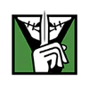
Taina "Caveira" Pereira
Born seventh in a family of ten boys, Pereira had to be resourceful in order to get what she wants. Little of her childhood is known apart from the meager pension her mother received after her father died. She was six years old when the Pereira family was forced to move to a poor neighborhood in the outskirts of the São Paulo state. She only caught the authorities' attention when she was 16, after her mother reported that she had been missing. A year later, Pereira was arrested miles away on robbery charges in Rio de Janeiro. Remaining poised and displaying intellect throughout the process, Pereira impressed the judge in charge of her case. He was lenient towards her age and character, which, he claimed, showed potential for social-educational reform. He gave Pereira the choice between entering a juvenile reformatory (FEBEM) and working with BOPE in Rio de Janeiro. Sensing protection for her deviant predisposition, Pereira accepted to become a BOPE criminal informant. Pereira excels at extracting information from suspects. Albeit using controversial methods undermining BOPE protocol, she was a key interrogator during the 2010 Rio de Janeiro Security Crisis. Her brutal behavior on the field suggests she may be suffering from an anti-social personality disorder. However, the results of all the tests conducted were inconclusive.
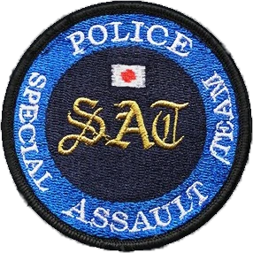
SAT
Special Assault Teams

Officially classified until 1996. Japan's Special Assault Team (S.A.T.) has since been collaborating with the S.A.S., GIGN, GSG-9 and FBI SWAT. Comprised of highly trained teams spread throughout Japan, the S.A.T. is a paramilitary counter-terrorism unit.

Yumiko "Hibana" Imagawa
A Nagoya native, Imagawa traveled the world to perfect her skills and technique. She is specialized in paramilitary techniques gained by training with the SAS, FBI SWAT, and GIGN, to name a few. From her diverse training, she acquired a rare tactical versatility, which includes a proficiency in tubular (bus, train, and airplane) assaults. The daughter of a local butcher, Imagawa was inspired by her family to practice Kyūdō from a young age. This long range weapon marked her entry in martial arts by perfecting her assessment of multiple factors a once while carrying precise, controlled, and fluid motions. Her area of expertise is to gain entry in high-risk areas. During her studies at the National Police Academy, she gained the nickname Hibana due to her improvised explosive devices and brilliant leadership skills on the field. Fluent in seven languages and lethal with any weapon, Imagawa was recruited by the Aichi Prefectural Police Department Special Unit, where her diverse techniques and charisma allowed her to move up the ranks quickly. Imagawa is a natural team builder. Passionate and adaptive, she inspires experts from diverse backgrounds to work together and reach a common goal.

Masaru "Echo" Enatsu
Masaru Enatsu grew up in Suginami City, Tokyo. This heavily populated city center is home to several animation studios and technology companies. At 16 years old, Enatsu was already challenging the robotics field by creating autonomous flying robots capable of search-and-rescue missions in highly difficult conditions. Two years later, he won the International Aerial Robotics Competition (IARC) and is known as having pushed the limits of what flying robots could accomplish. Enatsu was noticed by the National Police Security Bureau during his studies in Science and Engineering at the Tokyo Metropolitan University. Enticed to test his devices on the field, he entered the National Police Academy. A year later, he joined the Tokyo Metropolitan, Police Department Special Unit. Efficiency-obsessed and blunt, Enatsu is a talented officer despite his apathetic nature. In the wake of Nagoya's hostage crisis in 2007, Enatsu decided to transfer to the Aichi Prefectural Police Department Special Unit. Singularly focused, Enatsu's blunt communication style divides group harmony. His tendency to dismiss feedback has kept him from advancing to a higher rank.
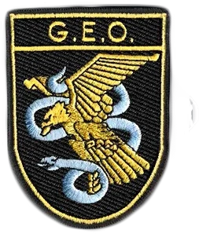
GEO
Grupo Especial de Operaciones
The Spanish Grupo Especial de Operaciones (G.E.O.) was founded in 1977 to counter the increasing threat of terror during Spain's transition to a Democratic government. Today, the unit prides itself on hostage rescue, disrupting terrorist plots and neutralizing organized crime.
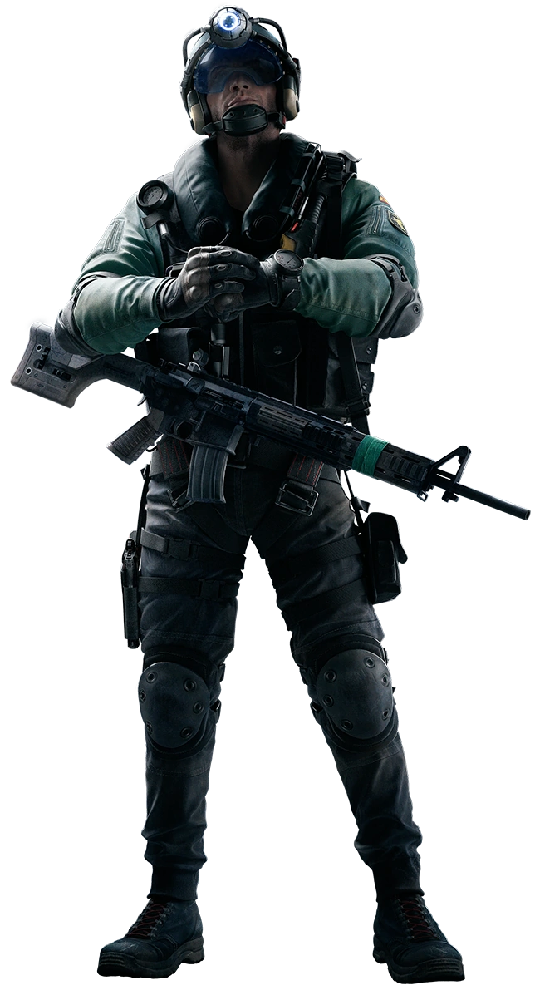
Ryad "Jackal" Ramírez Al-Hassar
Pushed from one family to the next, Ryad emerged from the foster care system when his older brother, Faisal Ramírez, turned 18 and became his legal guardian. Blaming his shortcomings for the loss of his older brother, Ramírez decided to join the Policía Nacional. He passed the mandatory ESO (Secondary studies) and became a CNP (Cuerpo Nacional de Policía) at 19 years old. He is still investigating his brother's case and to this day, but was unable to find any solid evidence against his brother's murderer. With strong resolve and broad resourcefulness in difficult terrains, Ramírez joined the Grupo Especial de Operaciones (GEO) to track down HVTs and intercept narcotics shipments. Suffers from chronic insomnia. Ramírez is at risk of developing acute symptoms such as muscular weariness, hallucinations and/or double vision. He must be monitored closely.
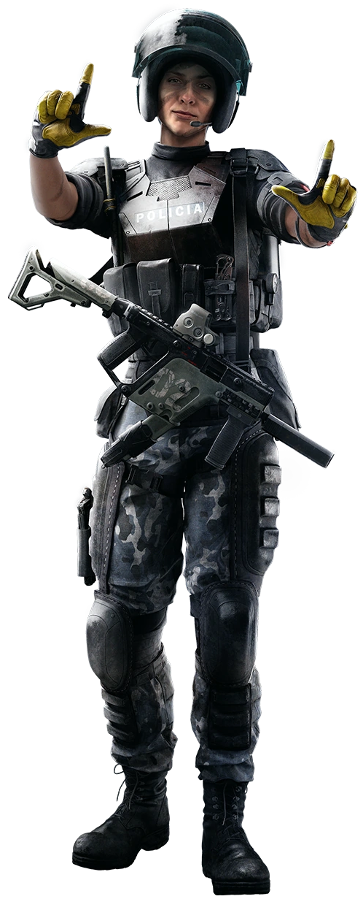
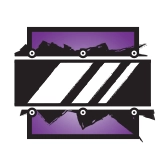
Elena "Mira" María Álvarez
Working alongside her father in his mechanics store from a young age, Álvarez can find the weaker spot on any machinery and turn it into an edge. She joined the police force Cuerpo Nacional de Policía so that she could be of service to those in need of protection, and thus serve her country. Proving to have stellar strength, endurance and knowledge of vehicles sparked her progress in the ballistic field. She joined the Grupo Especial de Operaciones (GEO) to develop and test bulletproof materials on the field as well as enhancing bridging vehicles. Abandoned by her mother at birth, she was raised by her father in Madrid. Being an only child, she found her purpose working for the family business.
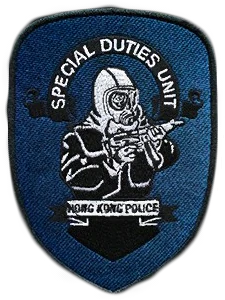
SDU
Special Duties Unit
Hong Kong's Special Duties Unit (S.D.U.) was formed in 1974. Through training with the S.A.S it has become one of the most potent Special Forces units in the world. The S.D.U. handles police and military operations over the sea, air, and land, specializing in anti-terrorism and hostage rescue.
Siu "Ying" Mei Lin
Born in the comfortable Central district of Hong Kong, Siu Mei Lin was a close protection operative before joining the Special Duties Unit (SDU). With her acute reflexes and cunning CQB methods, she took the lead on several VIP and witness protection operations. Having deployed an explosive short-range power and combat skills, she joined an elite security service school after graduation. Aiming to become an all-purpose operative, she traveled to a female exclusive training facility in Tel Aviv, Israel. She spent two years there, developing an expertise in firearms and driving maneuvers. Part of Operation High Sun. After completing her program she returned to Hong Kong, where she ensured the protection of several high-risk profiles. In 2008, she reoriented her toward the police force after being involved in a kidnapping situation. She was first recruited to review the processes used by the Police Tactical Force's Security Wing. During this time, her interest to lead international rescue operations grew, which drove her to apply to the SDU. As a Flying Tiger (SDU), she uses her experience in close protection to ensure minimum casualties while leading high-risk operations amidst Hong Kong's dense urban population. Her easy-going manner allows her to blend in, making her clients and teammates feel both secure and comfortable. Shows potential signs of post-traumatic stress disorder. She admitted having flashbacks of the car crash when she rushes into high-risk situations involving a number of civilians. Her extreme driving maneuvers may be a way for her to cope with stress, to assert control over those memories.
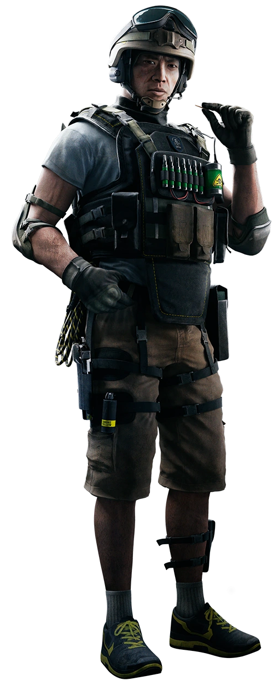
Liu "Lesion" Tze Long
Born in Junk Bay, Liu Tze Long still lives in a public housing estate not far from this area. He was raised by his father, who worked for a ship breaking company and often pulled double shifts. During these years, Liu would stay at the shipyard and help him dismantle obsolete ships for scrapping. As the ship breaking business began to dwindle out, Liu and his father took some demolition jobs under the table. It all came to a stop when Liu's father injured his back. Liu was 19 and could not support them both with his own income. Quickly crumbling under debts, he needed money fast. During that time, China sought some volunteers to undertake mine clearance in the provices of Yunnan and Guangxi. Liu answered the call and worked for two years at defusing hazardous ammunitions. With ample experience in demolition and mine disposal, he returned to Hong Kong to join the Explosive Ordnance Disposal Bureau. Soon after, he joined the Special Duties Unit (SDU) to deal with Chemical, Biological, Radiological and Nuclear terrorist threats. Fell in an oil tank while scavenging an old ship when he was 10 years old. Trying to break free, he ingested a significant amount of water seethed with toxins. Since the tank walls were ripped he managed to break free, but not unscarred. Liu is highly resilient to physical hardships. His mental strength is what set him apart from younger candidates. He was one of the 3 other recruits who were able to withstand the extended version of SAS Resistance to Interrogation Program. N.B. Admitted having detected the tang of oily waters during intense episodes of his Resistance Interrogation training.
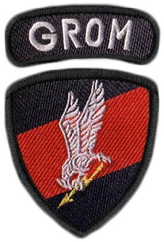
GROM
Grupa Reagowania Operacyjno-Manewrowego
JW GROM was officially activated in 1990, but the elusive unit only went public in 1994. Their namesake is derived from the legendary WWII Silent Unseen. Specialists in unconventional warfare roles, they are famous for leading anti-terrorist operations deep behind enemy lines.
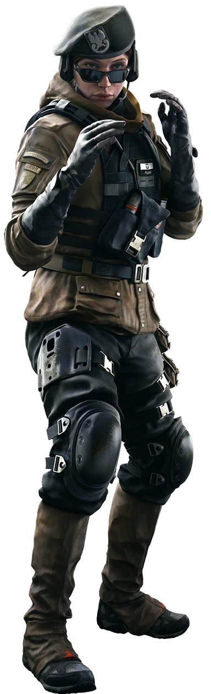

Zofia "Zofia" Bosak
Born in Wroclaw, Zofia Bosak is the oldest daughter of Jan Bosak, former commander of the Polish Special Forces Unit GROM. While attending her father's military high school, she was pressured to perform on every level – a burden her younger sister was not able to cope with. During a school trip to the Masurian Lake District, Zofia was prey to a disturbing prank that almost cost her life. While she played in the lake, three boys from her class took turns trying to drown her, just for 'fun'. This violent experience marked her with a deep mistrust of others. The following week, she has to sit beside her assailants in class. To deal with her growing anxiety, she decided to push her training further, and ensure she could rely on her skills for protection. Her father agreed to show her more ruthless techniques, given she would never question his methods. When Zofia hit legal age, she enlisted in the army. Among Zofia's most notable exploits is a rescue Operation in Guatemala, codenamed Red Agatha. A disastrous tropical storm formed a sinkhole in the middle of the city, swallowing an entire neighbourhood. Zofia was deployed to protect a team of scientists examining the perimeter. During a sudden landfall, she saved a child from disappearing into the abyss. To reward her ability to withstand hardships, Zofia received a medal and was promoted to Second Lieutenant. Throughout her experiences, Zofia forged a second family overseas. to have more impact on the field, she learned to trust her squad mates with her life, reconsidering the cruel lesson from the incident at Lakeland. Far away from her father's brutal training, Zofia let down her walls, developing close ties for the first time. She met her now-husband during a rogue operation in Mali, where they both mistook each other for hostiles. Challenged by her squad mates on the field, she discovered the true kind of specialist she wanted to become. At the peak of her career, she flew back to Poland for her wedding ceremony. The celebration was kept short, but Zofia quickly returned to Wroclaw for her maternity leave. Her arrival in Poland was soon followed by her father's sudden passing. The birth of her daughter had a profound effect on Zofia, igniting her need to cocoon with her family – but Ela ignored her sister's attempts to reconcile. Zofia returned to the GROM soon after hearing Ela would pass the selection. Except for her attempts to reconnect with her sister, Zofia kept her distance with everyone else. Her squadron noticed this change and wondered if her recent obsession with her father's pocket watch was a remnant of grief, or something more. When Ela accepted the prestigious offer to join Team Rainbow, Zofia saw no reason to stay behind. Everything about the GROM now seemed to remind her of her father. Three months later, Zofia became an official member of Team Rainbow. Underwent thorough examination, but remains inconclusive. Perhaps too experienced at falsifying test results. Significant divide between the two sisters. Their father had a key role in it. His obvious favoritism towards Zofia is well-known. When asked about their relationship growing up, Zofia kept her answers curt and non-committal. And yet, very protective of Ela. Refuses to discuss her father's suicide.
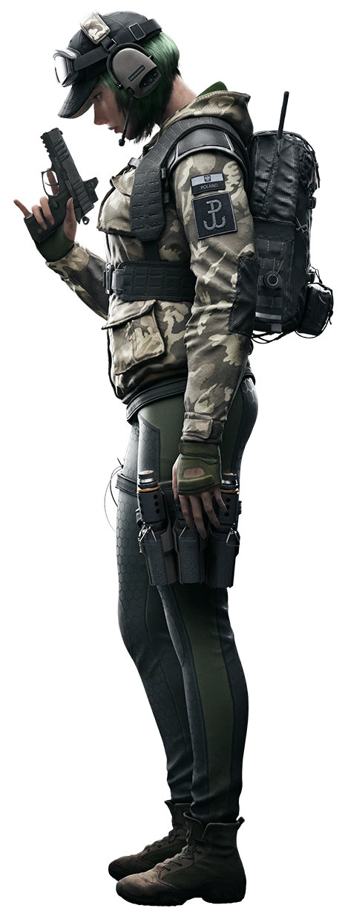
Elżbieta "Ela" Bosak
Born in Wroclaw, Elżbieta Bosak is the youngest daughter of Jan Bosak, former commander of the Polish Special Forces unit GROM. Experiencing some difficulties while attending a military high school, Ela left Poland behind after graduation. In Berlin, she studied Fine Arts, but her interest started to fade as the appeal of her old life slowly caught up with her. During her stay there, she made the acquaintance of the owner of a small private military company, who made her a job offer. Craving the adventure and financial independence, Ela accepted. Working as a PMC in Iraq, Ela gained a reputation. Known to possess an impressive range of abilities, her attitude was the only obstacle standing in her way. While she was seen as a prized addition to any squad, her employers monitored her closely to investigate reports of authority issues. Four years into her deployment, she received the first news from home, which stated that her father had taken his own life. A few months after her father's death, Ela terminated her contract and started training to pass the GROM selection as a civilian. Impressed by her determination and prowess on the field, the GROM saw in her a rare opportunity. Amidst the Polish Forces, she developed an expertise in Countering Threat Networks (CTN) and helped design advanced Exploitation methods to extract intel on a target's intentions and supply routes. One of her most well-known ventures is Operation Orange Sky. Joined by Valkyrie, SEAL's intel expert, Ela spent months infiltrating a warlord's inner circle before dismantling his network without harming a single civilian. Independent, creative, and rebellious, Elżbieta is intimate with the risks involved with her particular role, having suffered many losses in Iraq. The sudden death of her father provided her with a profound need of purpose. Elżbieta internalized the belief that she must prove posthumously her worth to her father and make amends. She uses her memory of him to push herself to unrealistic standards and to lead high-risk operations.
707th SMB
707th Special Mission Battalion

The 707th Special Mission Battalion was created to protect the 1988 Seoul Olympics. The "White Tigers", named for the revered legend, train in subzero temperatures, engaged in joint peacekeeping operations, maintain an all-female division, and neutralize threats to Korea. Their operators possess black belts in multiple martial arts.


Grace "Dokkaebi" Nam
Grace, named for the incomparable actress Grace Kelly, always broke expectations, even when it meant she stuck out somehow. She scavenged or bought spare components to build her own computers. She played soccer with the neighborhood boys and got into fights with them, but it was her sharp tongue that landed her in trouble with her teachers. She looked and acted like a troublemaker, so they tried to force her to conform to expectations. To survive, Grace learned to soften her image, to better play with and manipulate preconceptions; she bought fake glasses and adopted the geek girl persona. Grace's skills earned a National Scholarship at KAIST (Korean Advanced Institute of Science and Technology), but after graduating decided to join the Army. Her athleticism and daring paid off, and she was assigned to the ROK Army Special Warfare Command before earning a spot in the 9th Special Forces Brigade known as the Ghosts. Despite her unorthodox behavior within the highly disciplined ROK army, she gained notice for her exemplary tech skills and for being highly adaptable to situations. After Grace participated in joint training with Detachment K Green Berets, the American instructors encouraged her to try out with the 707th Special Mission Battalion: White Tigers. The White Tigers were a better fit for her skills, but Grace inadvertently butted heads with Major General Kuh, an old guard soldier with political ties all the way up to the Blue House, who followed orders to the letter and expected unflinching loyalty from his subordinates. Kuh made life difficult for Grace, preventing her from exploiting her full potential. Grace heard about Rainbow during training exercises with the SAS, and it sounded like the opportunity she had been seeking... the chance to contribute through her strengths. She knew that Major General Kuh would never put her on the list, so she did what she always did and thought outside of the box. Now Dokkaebi is a member of Rainbow much to the surprise of Major General Kuh, who is not happy about it. He wants her drummed out of the White Tigers, but Dokkaebi could not be happier. She is among men and women who reward asymmetrical thinking even though she knows she now has a target on her back. More so, she is sure the other ROK operator, Chul Kyung Hwa, is spying on her. She needs to work twice as hard, but Grace feels twice as motivated now. Grace plays with expectation because she wants people to underestimate her, but it is different with Rainbow. Before she knew how to control the situation and was never afraid of failure until the stakes became this critical. Rainbow Six was her most daring stunt and she knows she's alienated herself from the Korean military; any slip up and this point will see her drummed out of the military entirely, and this has added pressure to perform, improve, and succeed.


Chul Kyung "Vigil" Hwa
Chul Kyung Hwa doesn't remember much of his childhood, only that his family was escaping across Asia as refugees? Or were they criminals? He remembers his older brother drowning during a river crossing. He remembers the safe house where they stayed trapped for over a month in near silence. He remembers their train ride when soldiers arrested two fellow defectors. He remembers his sick mother slowing them all down during the jungle crossing. He remembers leaving her behind as his father told him not to cry, not to make a noise and alert the armed patrols. Throughout it all, everyone impressed upon Chul Kyung that anything he said or any strange behavior would get them caught... it was life or death. So he buried his emotions deep, lest he betray his parents and be responsible for their capture; he became a stone to the outside world. Gaining asylum in South Korea, it was not the happy life they'd envisioned. The loss of his family proved too much for Chul Kyung's father, who committed suicide, leaving his son an orphan. Chul Kyung remained a stone, never showing emotion, never betraying his inner thoughts. Chul Kyung was adopted into the Hwa family, who believed it best if he forget his past, which started by changing his full name to Chul Kyung Hwa. Chul Kyung was actively encouraged to forget his real name and he obliged. It was another form of camouflage. He grew up in a system of rules and codes of conduct, and they provided him with a reason to be stoic, to follow orders. He could hide behind the rules. Chul Kyung wanted to give back to South Korea, the country that took him in, and he entered the ROK Navy, proving the exemplary sailor. He earned himself a berth in the ROKN UDT/SEALs, not only passing with distinction, but becoming such an exemplary operator in the course of his service that he was handpicked by the 707th Special Mission Battalion: White Tigers. He was diligent, methodical, and tenacious, albeit quiet. Naturally, his status as the child of defectors was not shared with his fellow soldiers to better give him a fair shot, but when South Korea was given an opportunity to send two operators into Rainbow, Chul Kyung was at the top of the list. Chul Kyung carries the scars of his childhood, where the only safe haven from the uncertainty of escape was to hide deep inside himself and become a stone. While a highly effective and competent by-the-numbers operator, it's made him highly uncomfortable in social situations. He is anxious when it comes to his own body language and expressions, how others might interpret his actions. He feels exposed, an open book that betrays all his secrets. Chul Kyung is most comfortable wearing his ballistic mask, where he feels he can actually breathe and hide another layer of protection.
CBRN
Chemical, Biological, Radiological, Nuclear Threat Unit
The growing threat of biological and chemical attacks propelled all Special Forces Units to receive training to function under extreme conditions and to handle hazardous materials. Six created the Chemical, Biological, Radiological, Nuclear (CBRN) Threat Unit, formalizing a standard in best practices in the event of such attacks. CBRN operators are experts at handling Level 4 crisis hotzones.


Lera "Finka" Melnikova
Lera was nine when she was diagnosed with a neuropathy that included the slow degeneration of muscles and the loss of sensation in the limbs and extremities. Born three years after the Chernobyl disaster in the irradiated city of Gomel, Belarus, she grew up around children already suffering from birth defects. Her diagnosis was the realization of her fears, so when her parents encouraged her and her younger siblings to be physically active, she pushed herself even harder, determined to keep her body in peak condition to weather the neuropathy. She could not be sick if she stayed healthy, her young mind reasoned. All three Melnikova children grew up playing sports, with Lera excelling at those requiring agility and finesse but there was always the knowledge that the neuropathy would worsen unless someone found a more permanent solution. She decided that someone was herself. Lera moved to Novosibirsk to study at Novosibirsk State University and graduated with a PhD in Microbiology and Immunology. She remained at NSU in the Biotechnology and Virology Laboratory, her research uncovering treatments for a variety of pathogens and neuropathies including her own through drugs and self-dissolving nanites. While she hadn’t found a cure, she had found remission. Lera might have stayed in Academia had she not received a visit from the Federal Security Service of the Russian Federation (FSB). Russian Spetsnaz operators and special agents faced the ever-growing danger of exposure to hazardous materials including organophosphorus agents like VX gas. For the first time in her life, Lera began thinking outside of her own concerns. Her research had saved the lives of perfect strangers, and now they were reaching out to her, sending grateful postcards and photos and letters. She could have a greater impact still. Lera jumped at the chance to work with Spetsnaz volunteers in a variety of conditions as she adapted the nanobots to their high-performance physiologies. Quickly, she came to enjoy the sense of competition, camaraderie, and the mental toughness of the Russian Special Forces members. She joined the Army with an eye on becoming a Red Beret herself, on the front lines of saving lives as a Chemical Biological Radiological Nuclear (CBRN) specialist. Serving in the Russian Army, Lera rapidly proved herself physically and mentally tough enough to try out for the Spetsnaz. It was a brutal course, culminating in Close Quarter Battle (CQB) knife training with Kapkan. A misstep and a flourish from Kapkan, however, opened her face from brow to cheek, but Lera went for a series of bone-breaking punches to his nose and ribs before the pain overwhelmed her. They spent the night in the med tent, neither of them speaking, but enjoying a new, unspoken respect between them. From that day forward, she'd earned her moniker, Finka or "Knife." Lera became the Spetsnaz CBRN Specialist, joining the Vympel Unit under the FSB and using her nanobots to help her unit survive hot zones; she was one of the only people capable of tailoring the nanobots to specific operators. Her work in restructuring Russian battlefield protocols in the handling and neutralization of dangerous payloads earned her notice, and she became the go-to expert when it came to joint exercises with other CTUs. Six invited Lera to help Rainbow Six put together a CRBN unit of their own with Olivier "Lion" Flament as her first pick. Lera discovered that her neuropathy was slowly growing resistant to treatment. The old fears returned, every ache and pain analyzed and scrutinized as she pushed herself even harder to peak performance. Now, she constantly tweaks and modifies her formula to stave off twinges and numbness that she imagines might be the onset of decline. She pushes herself to the point of throwing up after workouts with IQ and Valkyrie, though only Valkyrie understands that punishing limit of physical fitness. Lera unable to distinguish between the disease and normal fatigue and is driven by her fears and made excellent by them in the same maddening moment. She is not young anymore, though, but more desperate than ever to hold on to her life. She is trying to find a new treatment while keeping it a secret, but Doc knows and is closely monitoring her CMT in case it begins to affect her performance. She has not shared this with anyone else, not Kapkan who is her no-nonsense mentor, and not Tachanka with whom she drinks and flirts.


Olivier "Lion" Flament
Olivier was born to a conservative, well-to-do family. His parents and older sister, Sophie, were in medicine and devout Catholics, but he bucked against their accomplishments and their faith. He was smart and arrogant, but he believed rebellion was a better use of his intellect. It was fun to act against expectation, to drink and party... at least it was until he got his girlfriend, Claire, pregnant. He tried to convince Claire to get an abortion, but she refused. Once his parents found out about the pregnancy, they kicked him out of the house; it was the last straw in a string of bad behavior. Depressed, Olivier went on a drug and alcohol-fueled bender, getting trashed enough to land in the hospital. That was his wake-up call. He was 18 and nearly homeless, so he joined the French Army out of desperation. He needed purpose. Military life was hard but rewarding. Olivier took solace in purpose and struggled to break old habits. He started sending money to Claire to support their newborn son even though she did not want to see Olivier. He became a second-level in-combat rescuer, and joined the 2nd Dragoon Regiment in their role as a CBRN reaction force. He also developed a close relationship with the regiment’s Catholic Chaplain, Bertrand, who eventually spoke to Claire and convinced her that Olivier regretted his actions. He arranged a reunion for them. It was a hard moment for Olivier. He met his son, Alexis, the child he wanted aborted, and the reality of his decision hit him hard. He had been selfish, pushing his girlfriend to do something because it inconvenienced him. More so, Claire was about to get married and Alexis was already calling someone else 'daddy'. Everything he had done, putting his loved ones through hell, shoved him into a wild depression that almost cost him his rank. Chaplain Bertrand helped Olivier through his crisis and with it, he returned to the Catholic Church. Olivier swore he would do everything possible to rectify the pain he had caused, so he worked harder, and sought more challenges. He qualified to join the Groupe d’intervention de la Gendarmerie nationale (GIGN) as their new biohazard expert, using drones to maintain and hold quarantine perimeters. He focused on his duty, on making things right, no matter how much it hurt him in the process. His feelings were irrelevant; what mattered was strict observation of his duty. During a Yellow Fever outbreak in Sudan, while protecting a field investigation team, his loud voice scared a frightened mob back and he gained the nickname "Lion" from the locals. In 2015, the army asked him to lead the 2nd Dragoons to West Africa to assist medical personnel fighting the Ebola epidemic. Tragedy ensued, and the decisions Olivier made for safety reasons put him at odds with Doc, who blamed him for the death of several medical personnel on-site including Doc's colleague. The tension between the two continues to this day in Team Rainbow. After studying his jacket, Finka recommended Olivier for Rainbow as a CBRN specialist, and Six agreed. Olivier immediately proved his value when Finka and he uncovered the source of the mysterious mist that came ashore in Sussex and poisoned people, though he claims he shares that success with Twitch, who provided him with the new aerial drone to locate the mist plume. Olivier has managed to stay in his son’s life, but it is an awkward relationship. Alexis does not know how to call him father and Olivier is not sure what it means to be a dad in the day-to-day. He has mended bridges with his parents and sister, his return to the Catholic faith healing those wounds, and while his decision to be a soldier bothers them, he is no longer the thoughtless rebel. He is not a soldier to make life easy on his soul. He bears the weight of responsibility for what he has done even though Bertrand constantly reminds him that forgiveness is in the heart of God. Lion is a by-the-books Operator because he doesn't trust his civilian instincts. Rules give him structure and allow him to control what he considers the pettier parts of his personality. They give him a safety net when conscience or arrogance could otherwise weaken his resolve and hurt more lives. He bears the weight of responsibility for what he has done and pushes himself to the limits as a form of coporeal punishment. Unfortunately, Lion is arrogant and has rubbed some people within GIGN and Rainbow the wrong way. Doc thinks he lacks the empathy necessary to help in medical crises while Lion thinks Doc's humanitarianism is a liability. Twitch is not happy about being caught in the middle of that fight. Lion's closest friend in GIGN is Montagne, but when Thatcher punched Olivier after he said the wrong thing during a training exercise, Lion almost brought the GIGN and SAS to blows.
GIS
Gruppo di Intervento Speciale

The GIS is headquartered in Livorno and falls under the authority of Comando interforze per le Operazioni delle Forze Speciali (COFS). Both the Ministry of Defense and the Ministry of the Interior can call them into action without a judge's approval. Their combat section includes three detachments of four-operative teams. The exploration, reconnaissance, and scouting section uses three operator-teams that include: two fighters, one explorer. They also maintain a sniper/recon team with two snipers and one scout.

Aria "Alibi" de Luca
Aria "Alibi" de Luca was born in Tripoli, Libya and immigrated with her family when she was three years old. Her father managed a small ordinance manufacturer, using his extensive North African contracts to open up exports to that region. De Luca carried her understanding and usage of Italian firearms through the family business and training on the shooting range. At 10, Aria entered the European Championships organized by the European Shooting Confederation and won gold in both 10-metre running target and 10-metre air pistol divisions. Following the event, a Carabinieri recruiter convinced her to join the police force. De Luca's precision shooting skills and professionalism shot her up the ranks quickly, and she served for a time with the elite Raggruppamento Operativo Speciale in fighting organized crime. She eventually earned a spot in the prestigious Gruppo Intervento Special (GIS) and following a successful operation in Afghanistan despite being separated from her unit, she was singled out for undercover work in organized crime. She infiltrated the Vinciguerra Crime Family as an arms dealer and spent several years among them before bringing them down from the inside. A newspaper leak of impending operations against the Vinciguerras then forced the GIS to accelerate their initiative. Following her undercover work and the successful dismantling of the Vinciguerra Crime Family, Aria de Luca received the invitation to join Rainbow as a capable operator. Specialist Aria de Luca (AKA: Alibi) presents a multi-layered facade, undoubtedly stemming from her years of undercover operations, but I suspect it's a protective measure likelier rooted from her childhood. She carries a deep-seated hatred for crime families (that much is obvious — it's the closest I've come to see her sophisticated veneer crack) and I think it may compromise her ability to operate rationally when it comes to organized crime. Thanks to my contact within the Carabinieri's Chief of Staff office, I was able to gain access to Specialist de Luca's psych evals following her application to join the GIS. Cross analyzing that with old police records and her family's hospital visits, I believe her father was the victim of pizzo or a protection racket... unless de Luca Sr. was singularly unlucky enough to repeatedly break fingers, fall down stairs and break his own arm... twice. Specialist de Luca was never herself injured and shows the same strong constitution and mental fortitude that we come to expect from all our operators. Psychologically, however, the wounds are deep and I suspect that her father's brush with organized crime has set our "Alibi" on her path. Alibi as a codename is also rather telling, considering the circumstances that cut short her undercover operation against the Vinciguerra crime family. On paper, Specialist de Luca is a decorated hero of the GIS, with a Gold Medal for Civil Valor for her efforts, but if you dig a little deeper, she has her detractor who believe she was the source of the leak that nearly sabotaged the GIS investigation. Specialist de Luca was enjoying a meteoric rise within the Vinciguerra Crime Family as an arms dealer when she gained access to a compound outside of Genoa that was central to the Vinciguerra's human trafficking operations. As a naturalized immigrant herself, it would seem that when Specialist de Luca saw the dozens of refugees waiting to be sold into slave labor and prostitution at the hands of the Vinciguerras, it broke through her well-crafted defenses and compelled her to act. I know for a fact she tried to convince her superiors to raid the Genoa compound and they refused because they were still gathering intel. I know that the reporter who cited a confidential informant in his exposé on the Genoa compound received his intel in the days following Specialist de Luca's meeting with her bosses. I'll state this for the record... if Specialist de Luca did leak the information to spur the GIS into action and to save those lives in Genoa, then I am somewhat relieved. It proves that there are lines Specialist de Luca will not cross, and this may prove important. I suspect that Under-Secretary-General Barston used backchannels to put Specialist de Luca's service jacket on my desk and that he isn't a supporter of the Rainbow Program. Whatever he hopes to gain with this manuever, I can state with no modest degree of certainty that Specialist de Luca remains unaware of this political agenda. But she likely has a part to play in whatever Under-Secretary-General Barston may have planned. If we want to get her on our side of things then Specialist (Maestro) Martello's inclusion in Rainbow serves us for both his skills and his ability to get past Specialist de Luca's walls. They worked extensively together during the Vinciguerra operations. She provided the intel and his unit acted on it. I suspect their relationship may be closer than that., but there appears to be a level of volatility that bears closer watch. Are they close friends? Are they familial? Or something else? Time will tell. Fortunately, Specialist de Luca seems to fit in well, foregoing the hazing that both the SAS and the SEALs operators seem fond of inflicting. In Conclusion, I believe Specialist de Luca is a valuable addition to the Rainbow Program and that her particular skills will keep the teams guessing during asymmetrical combat simulations.

Adriano "Maestro" Martello
Adriano "Maestro" Martello, oldest in a family of eight children, grew up in Rome, but attended the Military Academy of Modena at 18. He joined the Carabinieri and earned a spot as an Explorer Paratrooper in the 1st Paratrooper Regiment known as Tuscania. After several distinguished tours where he earned Silver and Bronze Medals of Military Valor, Martello qualified for Gruppo di Intervento Special (Special Intervention Group or GIS) and participated in jointed operations in Iraq, earning a facial scar from a roadside IED. He engaged in multiple actions against homegrown threats in Italy and eventually became an instructor helping train Tier 3 units in the Italian military. After Maestro's tour was completed, he went into private consultation where his courses became a top-rated operator boot camp for teaching advanced techniques to Tier 3 and Tier 2 units, as well as private military companies. The Tuscania eventually convinced Martello to re-enlist to help upgrade one of their units to a Tier 2 Special Forces classification, and this enabled him to join Rainbow as a representative of the Italian Units. I have no doubt that Specialist Adriano Martello (AKA: Maestro) is a natural leader. He had earned the nickname Maestro due to his willingness to sacrifice first place in order to help other soldiers during basic training, and while records indicate that some soldiers didn't appreciate the handholding, I think it refined Specialist Martello's teaching methodology. I did review his school records in regards to the fights he got into, and I believe he was keeping his brothers and sisters out of trouble by fighting for them. He initially entered the military to ease his parents' financial burden in raising eight children and he carries that sense of responsibility into his units. He cares about the men and women he serves with and has an affinity for bring out the best in others, even if it's with a bit of good-natured bluster and perhaps more vulgarity than some of our more reserved operators are used to. I suspect Specialist Martello enjoys effect though there is no doubt that he teaches through anecdotes. He presents himself as genuine, however, and it's an undeniable part of his charm because it comes off without any sort of duplicity. Specialist Martello will make an excellent Tactical Control Commander one day, but his biggest liability is his own wanderlust. He loves pursuing challenges to his own detriment. Once he's conquered an objective, there's little keeping him rooted. He has personal ties with Specialist Seamus "Sledge" Cowden (Joint Operations in Iraq before Article 5 was instituted), enough that to my understanding he's invited Specialist Cowden over to visit his family when the pair were cycled off-duty rotation. Even then, I doubt it's enough to keep him tied to Rainbow Operations. His ties to Specialist Aria "Alibi" de Luca may be a different story, however. They worked closely together during Operation Spider Wasp, with Specialist Martello's unit taking down organized crime targets based on Specialist de Luca's intel. Whatever other history they share remains unknown to me... for now. It is my estimation that Specialist Martello needs a carrot to remain invested, and that means presenting him with challenges that he's likely to fail at. It's why I recommend Specialist Martello step into the boxing ring with Specialist James "Smoke" Porter, for example, and pit him against a boxer with more training and skill. From my records, Specialist Martello grew up in the lower income neighborhoods along Rome's Lungotevere, where he befriended many Romany children. He boasts about boxing with the Romany, a strong tradition in that culture, and I believe that training him with Porter will encourage positive memories that will link his childhood with Rainbow. Another option is to arrange for Specialist Mike "Thatcher" Baker to take a personal interest in Martello's development. Martello has nothing short of genuine respect for Specialist Baker, enough to keep him tongue-tied around the SAS veteran. That state of deference may forge a strong enough bond to keep Specialist Martello invested in the Rainbow program.
GSUTR
Grim Sky Urban Tactical Response Team
The Urban Tactical Response Team, codenamed Grim Sky (or GSUTR) is Rainbow's testbed for operations in dense urban centers. It draws on such expertise as riot-officers for mob behavior and intelligence operators for converting local assets and building allied networks. The core operators are Maverick and Clash, but the unit also employs the expertise of Caveira, Bandit, Alibi, Castle, and Ying. Grim Sky trains operators on navigating and surviving in hostile cities or evading and diverting mobs.
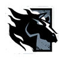
Erik "Maverick" Thorn
Bostonian Erik Thorn came from a multilingual home and ranked in the top 2% in intelligence. After High School, he enlisted with the U.S. Army and rose in rank over a short period of time. He learned Dari, and became an Intelligence Officer, serving in Kabul as foreign reporters, adventurers, and criminals flocked to the city. Thorn was well known in the underground club circuit and even among locals as a proficient Buzkashi player. Thorn was invited into the Unit as their regional specialist. Following selection, he remained in country gathering intel, building networks of allies and safe houses, and tracking hostiles. As the situation in Kabul worsened, Thorn kept tabs on Americans, rescuing them when necessary, and helping locals escape the violence. He was investigating a missing reporter when the Unit lost contact with him. After two years of silence, he re-emerged with enough intel to dismantle a major insurgency operation. There were still questions regarding his disappearance, but he was exonerated and his testimony sealed. His successful missions, along with his expertise, gained him the attention of Six. I knew Specialist Erik "Maverick" Thorn well before his disappearance. He was a legend among Intelligence Collectors as the spook who “went native.” He’s often difficult to engage with since he’s incredibly intelligent and able to read others with remarkable intensity, but ask him about Kabul or Buzkashi and he can barely contain his excitement. I've never seen old men sell their services on street corners to write love letters before, so it’s hardly surprising he took to Afghanistan… it's a bewitching culture. When expats began partying in underground clubs and drinking at restaurants, Specialist Thorn admitted that he knew the "Kabubble" was going to pop hard, that Westerners would become easy targets. He saw the writing on the wall before anyone else did. From a young age, Specialist Thorn handled an almost overwhelming amount of sensory input that would have shut down most kids. Instead, he compartmentalized and deconstructed everything around him as a way to function. It’s one reason I think he internalizes his emotions. His parents were loving but rigid; they barely let him explore his own neighborhood. It's what drove him to join the army, to experience a world he could only dream about. It’s hardly surprising Kabul left such a heavy imprint on him. I don't think he emerged from his shell until he started traveling and even now, his mind is with us, but his heart is in Kabul. Specialist Thorn has displayed a remarkable empathy stemming from his ability to watch, listen, and dissect. People confide in him and it's why he survived in Kabul as a fly on the wall. I'm still going through debriefs regarding his disappearance. It reads like a terrifying thriller but the scars that came with his experience have only tied him more closely to Afghanistan. I think his tattoo is a reminder of that life.

Morowa "Clash" Evans
Morowa Evans led the fight in her community against racist groups in often-violent clashes. She was relentless until the day her friend and mentor, Tray Pearson, died trying to stop looters during a riot. Two months later, Evans offered her assistance to the Metropolitan Police Service (MPS) because she wanted to make a difference from within the system. The MPS offered her a clean slate if she helped stop protests from going violent. Evans made it her career, going from insider to eventually joining the MPS. During the 2011 London Riots, Police Constable Evans commanded the front line in the Territorial Support Group to stop the violence from spreading, and later acquired special permission to attend Gold Command meetings, devising new crowd-control strategies based on her years as riot leader. PC Evans made 274 arrests throughout her service and later made Detective Constable. She earned the Queen’s Police Medal for exceptional bravery and earned a spot in Rainbow due to her experience, service record, and tenacity. When I recommended Specialist Morowa "Clash" Evans, I met considerable resistance. The Selection Board couldn't see past her violent past but I saw a street-hardened veteran who knew how to fight dirty and was the leading expert in riot control. Despite the mistrust from her fellow Constables, Specialist Evans proved herself during the 2011 London Riots when she confronted those she once led; from the CCTV footage and eyewitness reports, those rioters showed her no mercy, but she was exemplary. I initially wondered what allowed her to switch sides and remain sane. It's because she was still protecting Londoners from racists and those rioters alike who were indiscriminately hurting locals. She didn't want to quiet the storm. She wanted to redirect it. Regardless, it wasn’t easy going from riot leader to gaining Scotland Yard's trust. I'd say it's the very definition of an uphill battle and I know for a fact that every misstep was used against her. Her temper got the better of her early on, and some officers went out of their way to provoke her. In the end, many bets were lost when she graduated from Hendon, but she rightfully earned her division's respect. Nobody was more qualified in understanding mob behavior or pioneering snatch squad tactics. Who knows what kind of life she'd have led without her mentor's influence? They had the same goals, and while Pearson’s non-violent path was not hers, she still used his tragedy to channel her anger. She remains an enigma within Rainbow, but I'm glad to see she's already made friends with Specialist Gilles "Montagne" Touré; I think she appreciates the competition and they share experience working the protection detail at G8 and G20 Summits. She's persistent and fearsome, however, and she's bound to keep the operators on their toes with her tactics. I have no doubt she'll earn the same level of respect here on Rainbow that she fought so hard for in the MPS.
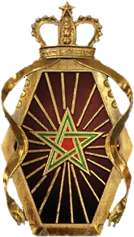
GIGR
Groupe d'Intervention de La Gendarmerie Royale
GIGR (Groupe d'Intervention de La Gendarmerie Royale) is a regiment consisting of specialized military units within the Royal Moroccan Gendarmerie. Their base of operations and missions have been kept top secret, while part of their special training has involved dealing with extremist ideologies and negotiation tactics. Their primary function: dismantle insurgent operations and intervene in emergency crises.
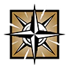
Sanaa "Nomad" El Maktoub
Brought up in a wealthy Moroccan family, Sanaa El Maktoub travelled considerably at a young age, visiting Europe and North Africa, and dreaming about braving remote regions. She enlisted in the military at 19 and later joined the Groupe d'Intérvention de La Gendarmerie Royale (GIGR) after graduating from the legendary Fortress. She served 4 tours with the Mountain Infantry Battalion and took part in Flintlock exercises and joint missions with Trans-Saharan Counterterrorism Initiative partners. She became her unit’s expert on environmental operations. Between tours, she undertakes solo expeditions. El Maktoub is among the few explorers who can cross the Sahara, climb up the Alps, trek through Asia’s rainforests, march along the Arctic Circle… and still return to her unit in operational shape. Rain or shine, desert or polar climates, she can walk through it all. Perceptive and resourceful, she’s an expert survivalist who sketches out her trips in her notebook. Specialist Sanaa El Maktoub is constantly on the move, thus her codename, "Nomad." The only time she stands still is when she's sketching in her notebook, and following the recovery of her fingers no less. I think her privileged upbringing instilled her with a private need to succeed, pushing her to conquer mountains and terrains her parents never faced. She likely got accused of being soft in her childhood, and she’s set out ever since to disprove it. In her it's created a world-class extreme environment expert whose reputation precedes her. Specialist El Maktoub possesses unmatched resilience to survive the elements, and her endurance is famous within military circles. In fact, the first time I encountered Specialist El Maktoub’s name was through a research paper about military fitness assessments. I can see why she’s invaluable to GIGR. She claims that anyone can develop her survivalist and planning skills with experience, but she's being genuinely modest. Bragging seems antithetical to her and I think that it somehow diminishes her own sense of accomplishment when she has to talk about it. She certainly doesn't do things the easy way… her drawings are her photographs. Truth be told, I’m envious of her spirit. First deployed to the Fortress at the start of her military career, she did extensive training under the leadership of Specialist Jalal El Fassi. It would be interesting to see them working together again under different circumstances. During her expeditions, she encountered a number of secluded cultures, like the Maasai in Kenya and the Nenets of Siberia. It’s resulted in self-taught skills in cultural diplomacy. While Rainbow Six recruits specialists from around the world, I'd guess no one else has seen as much of the world on their own as she has. And still, she wants to become the first woman to cross Antarctica, alone on foot. I have no doubt she can accomplish that, but I hope it doesn’t cost her more appendages. I privately worry that she considers such injuries a badge of honor and proof that she isn’t some spoiled rich girl.
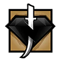
Jalal "Kaid" El Fassi
Jalal El Fassi was raised on stories of the Fortress, the legendary training facility in the Atlas Mountains. Its incomparable reputation, along with its famed "Kaids" (Commander) were seared into El Fassi. He joined the GIGR (Royal Moroccan Gendarmerie) at 18, demonstrating natural leadership skills under fire. His ability to effectively command specialized squadrons in joint Trans-Saharan Counterterrorism Initiative (TSCTP) operations led to his promotion as Captain. After years of service, the Fortress' reigning Commander chose his successor: El Fassi, whose authoritative but ethical style made him a worthy "Kaid". His imposing presence and strict values led to success with his graduates, and the Fortress quickly gained accolades. He further proved its excellence through the thousands of soldiers who trained or taught on its grounds. Over years of negotiating, he welcomed troops from across Africa and the Middle-East, fostering stronger ties between TSCTP members and African Standby Force countries. Specialist Jalal "Kaid" El Fassi is an imposing Operator. His appearance alone inspires respect – it's easy to see why his stature and demeanor strike fear in his students. Or how his body language warrants their respect and cooperation without him having to say a word. Frankly, it's both daunting and fascinating at the same time. Specialist El Fassi descends from a long line of Commanders and their Fortress. The Fortress was in disrepute for quite some time, however – some business involving bribes from wealthy families – before El Fassi was at the helm. And it seems his administration not only eliminated these sordid dealings, but elevated the Fortress to heights unimagined by any of his predecessors. It's been difficult separating Specialist El Fassi from his role. He's sacrificed a personal life for the success of his Fortress, and his role makes it difficult to create interpersonal relationships. I suspect he prefers being alone—he certainly isn't the type to open up and share, but I think I understand why. He's taken it upon himself to guide and nurture the future of Moroccan Special Forces, and potentially all of North Africa. He is the rock that all others look up to, so Specialist El Fassi shoulders the brunt of that weight with equanimity because he believes nobody else can. Specialist El Fassi is particularly phlegmatic, and his dedication to his duty as Commander and to the Fortress is resolute. Rainbow spent years trying to persuade him to join, but he is not easily moved. The Fortress and its legacy were instilled in him as a child. It is his home, his castle, and I can see the time he spends there in solitude is invaluable. But we finally managed to cut a deal with him, one that not even the great Kaid could turn down… one to improve his school and propel it into international standing. This will be the first time El Fassi is among equals. Only time will tell how he reacts to not being in a position of authority.

Oryx
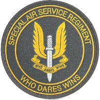
SASR
Special Air Serivce Regiment
The Special Air Serivce Regiment (SASR or SAS) shares the name of the unit that inspired its creation back in 1957. This Australian Army's Special Forces unit consists of 4 Sabre Squadrons, and serves globally from counter-insurgency operations to special reconnaissance, humanitarian aid, and peace-keeping initiatives across the world.
Max "Mozzie" Goose
Right after Year 10, Max Goose applied to enter the Australian Defence Force Academy, later working in Combat & Security. He joined an infantry regiment that incorporated dirt bikes and all-terrain vehicles in their reconnaissance operations. Goose excelled in land navigation and became the two-wheeler expert in raids, scouting, and convoy operations. Following Operation Catalyst, he was handpicked to join the Special Air Service Regiment (SASR), so long as he passed selection and refrained from talking back. His specialized off-road skillsets and quick thinking were highly prized, even though his driving style appeared reckless. He deployed to Operation Slipper and served until the operation's conclusion. He later received the National Emergency Medal for saving firefighters during the Esperance bushfires. Goose is a calculated daredevil who loves testing upcoming military stealth bikes, but he says there's no bigger honor than being asked to join Rainbow Six. On their own, Specialist Max "Mozzie" Goose and Specialist Tori "Gridlock" Tallyo Fairous perform exceedingly well, but together, they pull off some amazing, even hare-brained stunts sure to make the sternest of commanders crack a smile… when they succeed, of course. Just like their operation at the Esperance bushfires. These two specialists create this remarkable balance seldom seen between two operators. I'm curious to see if they would still help each other as opponents, or if duty will take precedence over their friendship. He's a speed demon, not just on his bike, but how he processes information. By the time others are done parsing a problem, he has already considered the feasibility of a particular course of action, having weighed all the pros and cons, and he's already kick-started his bike. Those seconds he's saving are precious. All the while, he's smirking beneath that moustache, and there's this shine to his eyes that makes everyone uneasy. I believe he's a troublemaker in spirit, but a real showman at heart. Goose grew up as the middle sibling in his family and I do believe he had to put extra effort to be heard or noticed, which explains the showman side of his personality. He jokes that his parents paid more attention to him the moment he engaged in extreme sports like freestyle mountain biking, dune buggy racing, and the occasional hang gliding. He told me that the moment he told his mum he did skydiving with dirt bikes, she completely lost it. I've had the… "pleasure" of hearing the extent of his profanity, though like many behavioural psychologists, I've seen enough evidence to support the theory that swearing is good for you… that it's not maladaptive. I've even seen Specialist Goose use humour to cover pain, though I wonder if he uses vulgarity to make up for his physical stature, likely to appear more intimidating. So far, all my observations indicate that he becomes quite furious when his height is made all the more obvious.

Tori "Gridlock" Tallyo Fairous
The eldest of five, Fairous has demonstrated leadership potential throughout her life. From an early age Fairous worked with engines and competed in robot championships. Her mechanic background was heavily influenced by her father, a military aircraft mechanic. Fairous joined the Australian army reserves to further develop her mechanical engineering skills and to have access to the best equipment. After graduating from university she chose Army branch of the Australian Defense Force, where she honed her mechanical prowess. Fairous also has expertise in a range of weapons, intelligence gathering and close protection duties, and has the ability to adapt to unexpected situations and remain calm in dangerous situations. This unique skill set made her an essential recruit into the SASR Mobility Platoon. Fairous was awarded the National Emergency Medal for her part in saving firefighters. She has been offered lead positions but has repeatedly turned them down. Specialists Tori "Gridlock" Fairous and Max "Mozzie" Goose caught my attention after the Esperance Bushfire Operation when their daring feat to rescue trapped firefighters earned them a medal. For outsiders, their plan looked horribly reckless, but to me it illustrated what I like in a team. These two have a long history, having first met in high school at a robot wars competition and then again during army training. They've been a team ever since. Individually, they're assets to Rainbow… But together they dominate. Both consistently demonstrate creativity and skill under pressure, so… what happens when we position them against one another? And I want to see if Specialist Fairous can maintain her cool among a new team… not to mention how the team feels about someone with such a formidable presence. Field reports often refer to Fairous's natural leadership so I'm curious why she consistently turns down promotions. She jokes that it's too much paperwork, but she seems to back into the role anyway. After her father died, she and her mother discovered the family farm was in debt. Fairous took the lead, rallying her four siblings and extended cousins while using her army salary to save the farm. Fairous isn't afraid of responsibility and her desire to look out for her family extends to how she interacts with her team. This makes me want to look more closely at her life on the farm. I can hear the fondness for it even when she's griping about how she has to keep fixing backed-up toilets and broken-down tractors. Fairous's "get on with things" attitude means that she doesn't shy from hard work and manages to find humor in every situation. So I wonder if she turns down the promotions because she has plenty of opportunity to be boss at home and that at work she'd prefer to just get on with it.
A Highly Customizable Operator, the Recruit varies between equipment from the five base-game CTUs. As such, the Recruit brings more versatility than any other Operator, but lacks the ability to properly specialize in any particular role. The Recruit is not able to customize their weapons with any sort of attachments or weapon skins. This comes to their detriment, as some of the weapons the Recruit can select have iron sights that are more obstructive than others. While Operators are limited to one line of secondary gadgets, Recruit can have two different kinds of secondary gadgets. For example, Recruits have access to Barbed Wire, along with either a Deployable Shield or a Nitro Cell.


Recruit